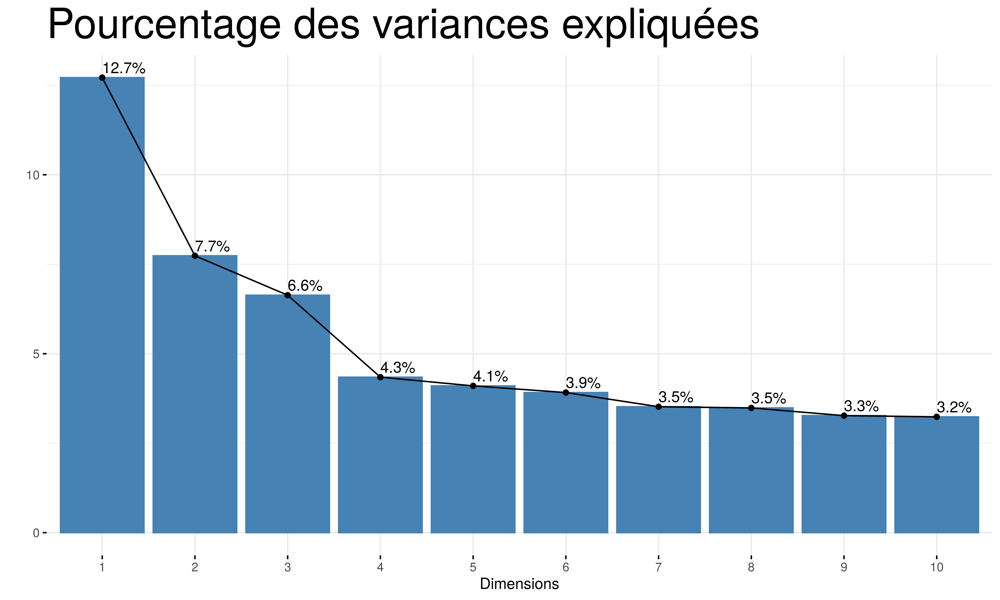
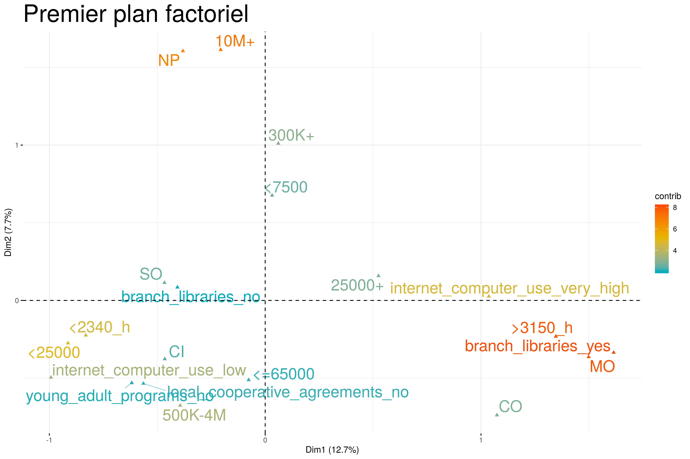
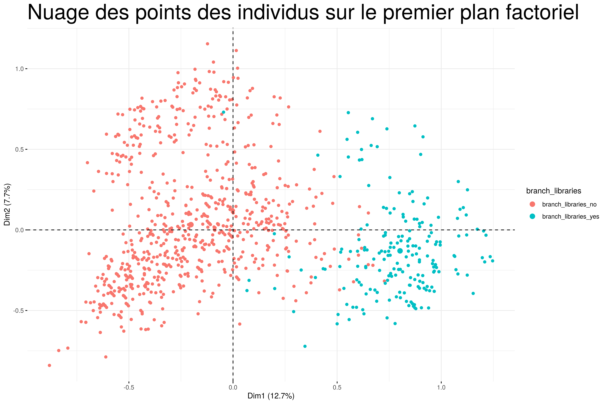
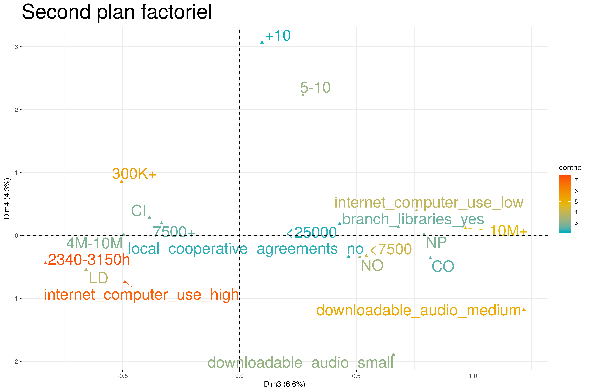

6 L’analyse des correspondances multiples
L’analyse des correspondances multiples est une technique descriptive visant à résumer l’information contenu dans un grand nombre de variables afin de faciliter l’interprétation des corrélations existantes entre ces différentes variables. On cherche à savoir quelles sont les modalités corrélées entre elles.

En ACM, les pourcentages expliqués par les dimensions sont en général plus faibles que pour une ACP. Cela est due principalement au fait que toutes les modalités des colonnes sont transformées elles-mêmes en colonnes. Ce qui fait exploser le nombre des colonnes.
Nous allons dans le cadre de ce projet retenir 4 dimensions pour expliquer la variance entre les bibliothèques. Ces 4 dimensions expliquent en total 31.3% de la variance totale. Le choix de 4 dimensions nous permet également de représenter 2 plans factoriels sur lesquels nous observons la forme que prend le nuage des points des individus.
Etant donné le grand nombre des variables créées par l’ACM, nous n’allons représenter pour chaque plan factoriel que les 20 premières contributions pour ne pas rendre illisible le graphique.
6.1 Analyse graphique
6.1.1 Premier plan factoriel

Le premier plan factoriel fait sortir une opposition assez nette entre les bibliothèques deux catégories de bibliothèques : d’un côté, on observe des bibliothèques possédant des branches (branch_libraries_yes), qui ont un catalogue de plus de 25000 oeuvres imprimées et une utilisation très importante d’Internet situées à droite du cadran et de l’autre côté des bibliothèques qui n’ont pas de branches, qui ouvrent moins 2340 heures (hours_open <2340_h) et qui sont des bibliothèques à guichet unique (administrative_structure = Single Outlet (S0)).
Représentons également le nuage de points des individus sur le premier plan factoriel en coloriant les individus (bibliothèques) selon qu’ils possèdent ou non une branche.

Nous comprenons mieux à l’aide de ce nuage des points des individus colorié pourquoi la variable branch_libraries est d’une grande contribution. On observe qu’elle discrimine nettement les bibliothèques. A gauche se trouvent des bibliothèques qui n’ont pas de branches et à droite celles qui en ont.
6.1.2 Second plan factoriel

Le second plan factoriel met en opposition la taille des Etats dans lesquels se trouvent les bibliothèques, le nombre de libraires diplômés, le téléchargement des fichiers audio, la structure administrative des bibliothèques et leurs statuts juridiques.
A droite du plan se trouvent des bibliothèques qui se situent dans les Etats de plus de plus de 10 million d’habitats (10M+). Ce sont des bibliothèques gérées par les comtés (CO) et qui ont un statut d’association à but non lucratif (NP). A gauche se trouvent des bibliothèques plutôt modernes, qui utilisent Internet, qui sont gérées par la municipalité (CI) ou par les quartiers (LD).
Nous détaillerons davantage les caractéristiques des bibliothèques lorsqu’elles seront classifiées hiérarchiquement en fonction de leurs similitudes.
Représentons le nuage des points bibliothèques sur le deuxième axe factoriel.

Ce second nuage colorié par la taille des Etats montre une saturation. Cela signifie que le pouvoir explicatif de ce plan est plus faible que le premier. En effet le 3e axe résume 6.6% de l’inertie du nuage et le 4e résume 4.3%. Les résultats sont donc à relativiser. Il y a beaucoup de chevauchement et on ne voit pas de tendance dominante.
6.2 Résultats tabulaires
Le package que nous utilisons pour l’analyse des données faire ressortir dans de nombreux tableaux les résultats intermédiaires à l’interprétation des graphiques que nous venons de commenter. Les tableaux des résultats contiennent par exemple la qualité de représentation des modalités et des individus. La plupart des informations contenues dans ces tableaux aident à affiner l’interprétation mais elles peuvent également être redondantes. Nous allons afficher uniquement le \(cos^2\) qui représente la qualité de représentation d’une modalité sur un axe factoriel. Le reste des résultats est placé dans les annexes.
| Dim 1 | Dim 2 | Dim 3 | Dim 4 | Dim 5 | |
|---|---|---|---|---|---|
| MA | 0.04 | 0.00 | 0.00 | 0.00 | 0.00 |
| MO | 0.65 | 0.04 | 0.08 | 0.00 | 0.00 |
| SO | 0.71 | 0.04 | 0.08 | 0.00 | 0.00 |
| <25000 | 0.48 | 0.04 | 0.11 | 0.02 | 0.03 |
| 25000+ | 0.48 | 0.04 | 0.11 | 0.02 | 0.03 |
| audio_collection_no | 0.01 | 0.02 | 0.01 | 0.00 | 0.00 |
| audio_collection_yes | 0.01 | 0.02 | 0.01 | 0.00 | 0.00 |
| <=65000 | 0.01 | 0.31 | 0.00 | 0.16 | 0.00 |
| 65K-300K | 0.00 | 0.03 | 0.03 | 0.00 | 0.01 |
| 300K+ | 0.00 | 0.26 | 0.06 | 0.18 | 0.03 |
| HQ | 0.01 | 0.00 | 0.01 | 0.01 | 0.10 |
| ME | 0.08 | 0.04 | 0.14 | 0.07 | 0.09 |
| NO | 0.07 | 0.04 | 0.13 | 0.05 | 0.05 |
| downloadable_audio_small | 0.00 | 0.00 | 0.01 | 0.10 | 0.01 |
| downloadable_audio_medium | 0.00 | 0.08 | 0.10 | 0.10 | 0.05 |
| downloadable_audio_high | 0.00 | 0.05 | 0.11 | 0.20 | 0.06 |
| physical_video_no | 0.00 | 0.00 | 0.02 | 0.02 | 0.02 |
| physical_video_yes | 0.00 | 0.00 | 0.02 | 0.02 | 0.02 |
| <2340_h | 0.49 | 0.04 | 0.10 | 0.03 | 0.04 |
| 2340-3150h | 0.01 | 0.12 | 0.30 | 0.08 | 0.07 |
| >3150_h | 0.71 | 0.02 | 0.04 | 0.01 | 0.00 |
| young_adult_programs_no | 0.10 | 0.08 | 0.07 | 0.02 | 0.01 |
| young_adult_programs_yes | 0.10 | 0.08 | 0.07 | 0.02 | 0.01 |
| internet_computer_use_low | 0.23 | 0.06 | 0.14 | 0.04 | 0.01 |
| internet_computer_use_medium | 0.11 | 0.00 | 0.01 | 0.00 | 0.03 |
| internet_computer_use_high | 0.00 | 0.04 | 0.12 | 0.26 | 0.05 |
| internet_computer_use_very_high | 0.44 | 0.00 | 0.00 | 0.10 | 0.00 |
| 500K-4M | 0.10 | 0.29 | 0.01 | 0.00 | 0.22 |
| 4M-10M | 0.15 | 0.00 | 0.18 | 0.00 | 0.31 |
| 10M+ | 0.01 | 0.58 | 0.21 | 0.00 | 0.02 |
| CC | 0.00 | 0.01 | 0.00 | 0.00 | 0.07 |
| CI | 0.18 | 0.12 | 0.12 | 0.07 | 0.04 |
| CO | 0.15 | 0.07 | 0.08 | 0.02 | 0.02 |
| LD | 0.08 | 0.00 | 0.10 | 0.07 | 0.36 |
| MJ | 0.04 | 0.01 | 0.03 | 0.00 | 0.05 |
| NL | 0.00 | 0.00 | 0.01 | 0.06 | 0.01 |
| NP | 0.03 | 0.52 | 0.12 | 0.00 | 0.01 |
| OT | 0.00 | 0.06 | 0.03 | 0.03 | 0.00 |
| SD | 0.00 | 0.00 | 0.00 | 0.00 | 0.04 |
| wireless_internet_sessions_no | 0.00 | 0.00 | 0.03 | 0.00 | 0.03 |
| wireless_internet_sessions_yes | 0.00 | 0.00 | 0.03 | 0.00 | 0.03 |
| branch_libraries_no | 0.66 | 0.03 | 0.12 | 0.00 | 0.00 |
| branch_libraries_yes | 0.66 | 0.03 | 0.12 | 0.00 | 0.00 |
| local_cooperative_agreements_no | 0.10 | 0.09 | 0.07 | 0.04 | 0.01 |
| local_cooperative_agreements_yes | 0.10 | 0.09 | 0.07 | 0.04 | 0.01 |
| <7500 | 0.00 | 0.28 | 0.18 | 0.06 | 0.04 |
| 7500+ | 0.00 | 0.28 | 0.18 | 0.06 | 0.04 |
| <5 | 0.12 | 0.00 | 0.00 | 0.19 | 0.01 |
| 5-10 | 0.08 | 0.00 | 0.00 | 0.12 | 0.01 |
| +10 | 0.04 | 0.00 | 0.00 | 0.08 | 0.00 |
Le \(cos^2\) montre la qualité de représentation des modalités sur les axes factoriels où ils sont projettés. Le cosinus carré prend une valeur entre 0 et 1. Nous voyons grâce à ce tableau que plusieurs des modalités ont de très faibles \(cos^2\), seules quelques unes sont bien représentées. Sur l’axe 1, les modalités MO, SO, <2500, 2500+, <2340h, >3150h, internet_use, branch_libraries (yes et no) ont des cosinus carré supérieurs à 0.4, cela montre qu’ils sont assez bien représentés et cela signifie que ces modalités caractérisent bien l’axe. Ce qu’on observe également c’est que la valeur des \(cos^2\) diminue à mesure qu’on passe à des axes qui ont de faibles contributions. Sur l’axe 2, le cosinus carré le plus élevé est de 0.52 et est prise par la modalité NP. Les autres modalités ayant des qualités de représentation assez élevée sont <7500 et 7500+ qui représente le niveau de collection digitale des bibliothèques.
6.2.1 Variables quantitatives supplémentaires
Nous avons spécifié dans l’ACM des variables quantitatives supplémentaires (ou encore illustratives) pour permettre d’affiner l’interprétation. Une variable illustrative n’intervient pas dans le calcul mais aide à placer dans les résultats de l’ACM dans un contexte.
| Dim 1 | Dim 2 | Dim 3 | Dim 4 | Dim 5 | |
|---|---|---|---|---|---|
| print_subscriptions | 0.53 | 0.04 | -0.06 | 0.23 | -0.01 |
| registered_users | 0.62 | 0.02 | 0.08 | 0.31 | -0.05 |
| childrens_programs | 0.60 | 0.11 | -0.04 | 0.22 | -0.02 |
| local_government_operating_revenue | 0.61 | -0.01 | -0.05 | 0.36 | 0.07 |
On observe que l’effet de taille constatée dans l’ACP persiste avec les variables quantitatives illustratves. Toutes les variables sont positivement corrélées avec le premier axe factoriel.